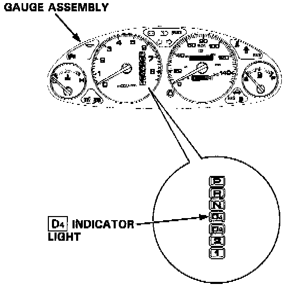
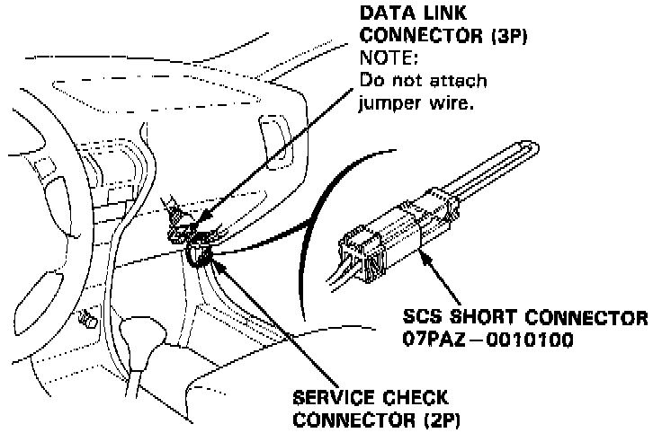
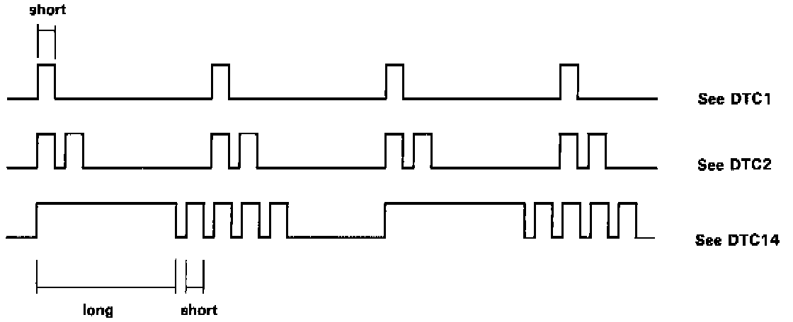

Without Scan Tool

DIAGNOSTIC TROUBLE CODE DETECTING USING SCS SERVICE CONNECTOR
When the Transmission Control Module (TCM) senses an abnormality in the input or output systems, the "D4" indicator light in the gauge assembly will blink.

When the Service Check Connector (located under the dash on the passenger side) is connected with the special tool as shown, the "D4" indicator light will blink the Diagnostic Trouble Code (DTC) when the ignition switch is turned on. When the "D4" indicator light has been reported on, connect the Service Check Connector with the special tool. Then turn on the ignition switch and observe the "D4" indicator light.

Codes 1 through 9 are indicated by individual short blinks, codes 10 through 15 are indicated by a series of long and short blinks. One long blink equals 10 short blinks. Add the long and short blinks together to determine the code. After determining the code, refer to Diagnosis by Symptom. Symptom Diagnosis
NOTE: Some PGM-FI problems will also make the "D4" indicator light come on.